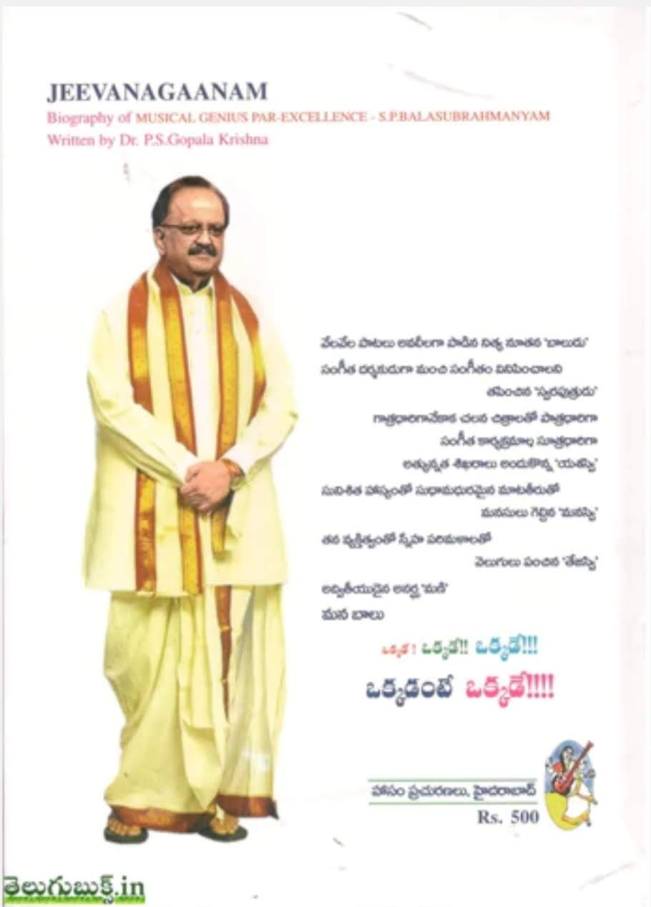
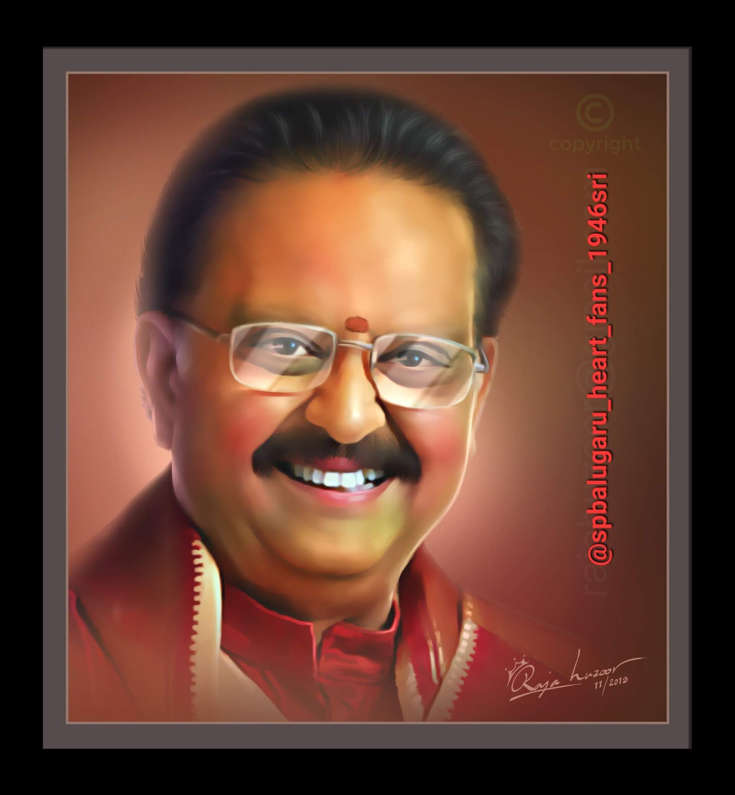
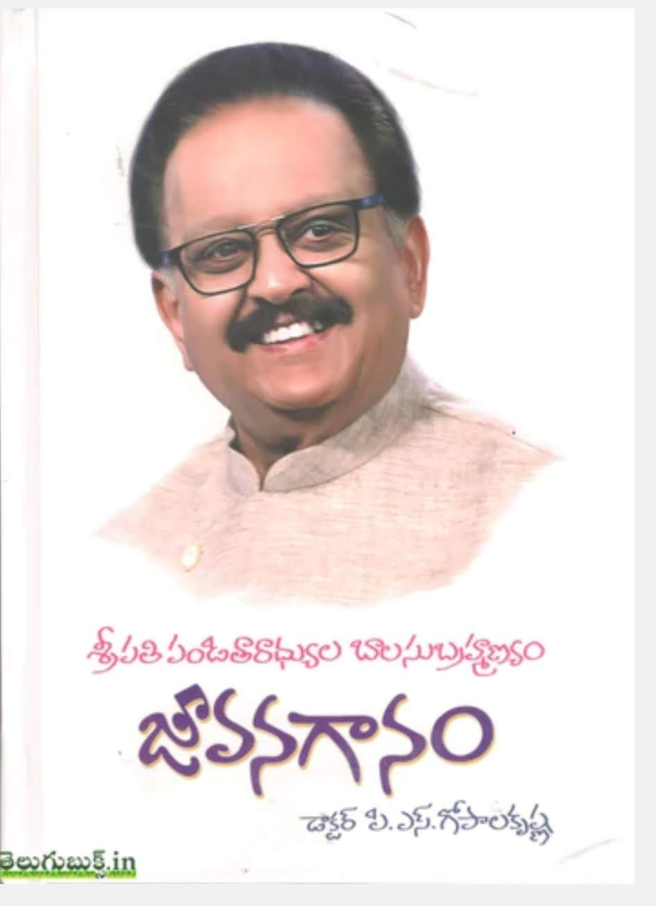
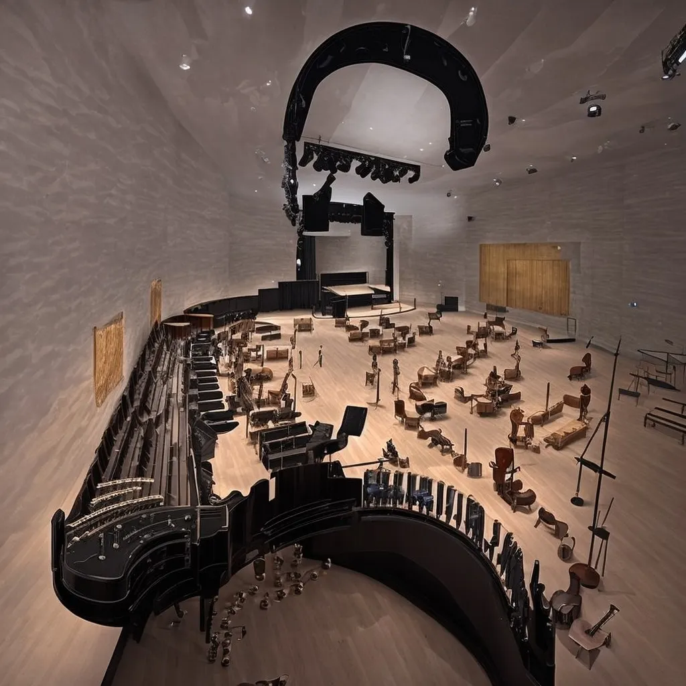

Celebrating the life, music and magic of Dr. S. P. Balasubrahmanyam — our beloved Balu Garu, whose songs still feel like home.
*Commonly cited career estimate; totals vary by source.

More than a singer — an emotion shared across generations.

FOREVERSripathi Panditaradhyula Balasubrahmanyam, lovingly known as SPB or Balu Garu, became one of Indian cinema's most cherished playback singers.
Born on 4 June 1946, he brought warmth, tenderness, energy and unmistakable character to songs in many Indian languages. His voice could turn a romantic melody into a memory, a devotional song into a prayer, and a lively number into a celebration.
Across a career spanning decades, he also worked as an actor, composer, dubbing artist and television presenter. His humility and affection for music made him beloved both on and off the stage.
Some voices are heard. A rare voice is felt. Balu Garu gave every song a heartbeat.
Born on 4 June in Konetampet.
Made his playback singing debut in Telugu cinema.
Sang across languages, genres and generations.
His recordings continue to connect hearts.
Celebrate the legendary voice of S. P. Balasubrahmanyam. Explore his unforgettable Telugu melodies and hit songs.
Music is provided by YouTube. If the embedded search player is unavailable, use the song links below.
A small fan gallery celebrating the artist, the performer and the memories.

The voice on stage Every note, a memory
His story A life devoted to music One voice, millions of hearts The magic of live music Where music lives Behind every beautiful sound Music beyond time A sky full of melodies A towering legacy Unforgettable and enduringSome images are artistic tribute imagery supplied with this project, not archival photographs.
A voice that could smile, cry, tease, comfort and inspire. SPB's artistry crossed language barriers and made listeners feel understood — wherever they came from.
Versatility without limits Romance, devotion, comedy, classical and celebration.
Emotion in every note A deeply human voice that made lyrics feel personal.
An inspiration to artists A lasting example of dedication, kindness and craft.